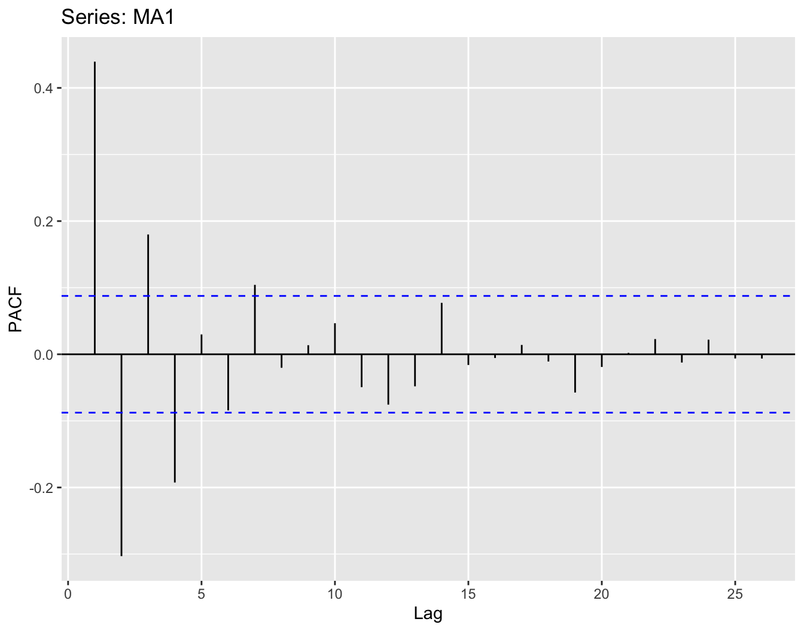
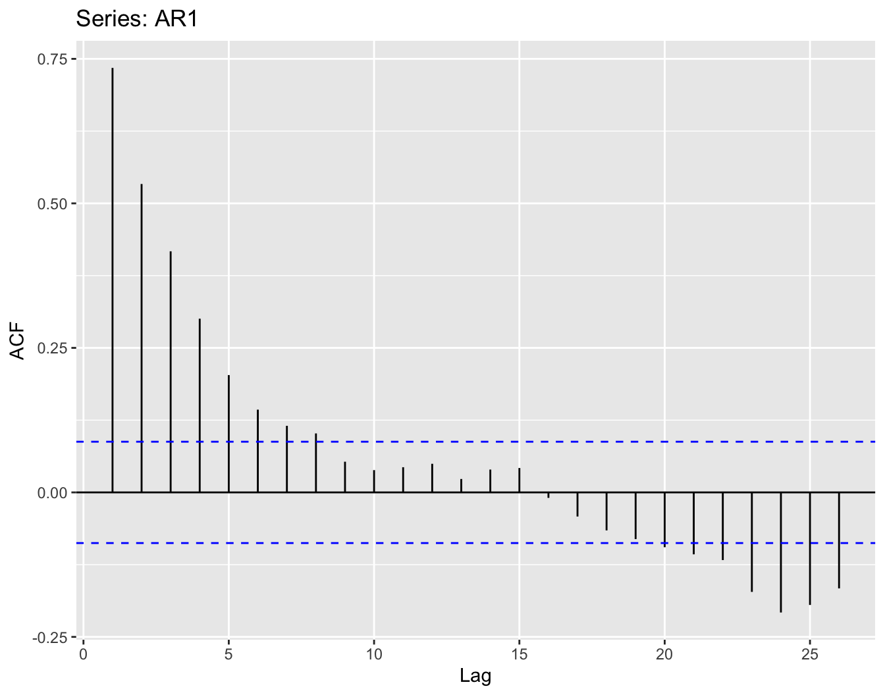
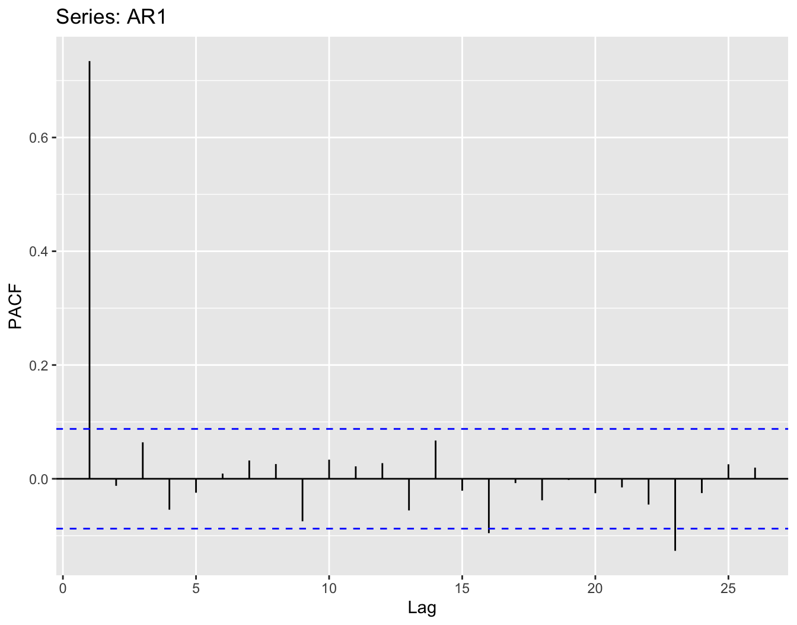
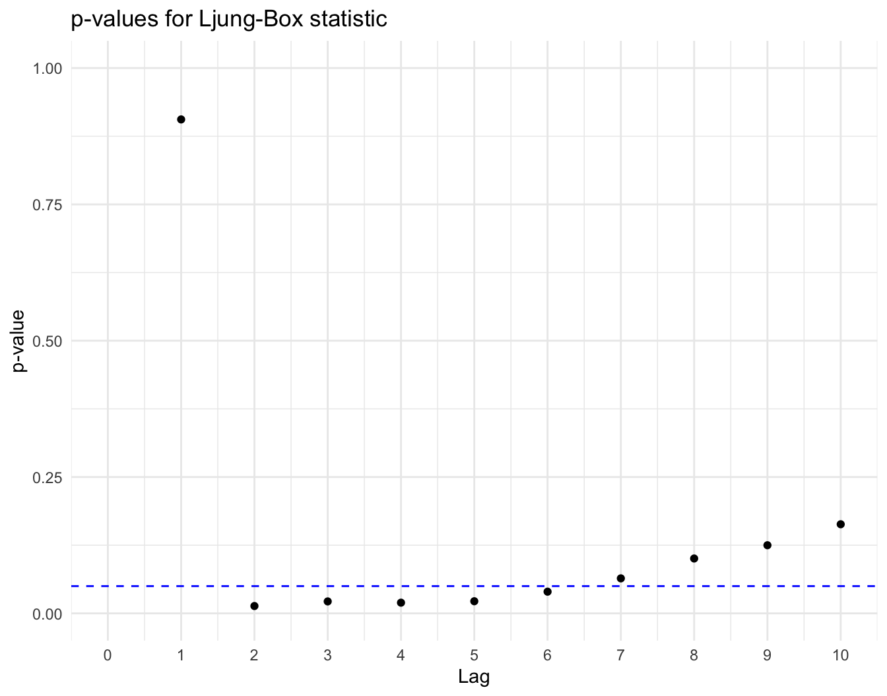

4 Statistique des processus stationnaires du second ordre
\[ \newcommand{\N}{\mathbb{N}} \newcommand{\Z}{\mathbb{Z}} \newcommand{\R}{\mathbb{R}} \newcommand{\E}{\mathbb{E}} \newcommand{\C}{\text{Cov}} \newcommand{\V}{\mathrm{Var}} \newcommand{\EL}{\text{EL}} \newcommand{\H}{\mathcal H} \]
Dans ce chapitre, nous abordons quemques points d’inférence statistique dans le cadre de l’étude des séries temporelles. Nous allons nous intéresser à la construction d’estimateurs pour la moyenne, la fonction d’autocovariance, la fonction d’autocorrélation et la densité spectrale d’un processus stationnaire. Nous aborderons ensuite la problématique de la prévision des valeurs futures d’une série temporelle. Enfin, nous verrons quelques tests statistiques qui permettent de se prononcer sur la stationnarité d’un processus.
Dans tout ce chapitre, nous supposons que l’on observe le processus stationnaire \((X_t)_{t\in \Z}\) sur les instants \(t=1,\ldots,n\).
4.1 Quelques estimateurs
4.1.1 Estimateur de la moyenne du processus stationnaire
Rappelons que la fonction moyenne \(\mu_X\) est constante pour un processus stationnaire. Ainsi, on l’estime facilement par la moyenne empirique
\[ \hat \mu_X=\bar X_n=\frac{1}{n} \sum_{t=1}^n X_t. \]
Cet estimateur est sans biais et \(L^2\)-consistant d’après le théorème suivant.
Theorem 4.1 Si \((X_t)_{t\in \Z}\) est un processus stationnaire de moyenne \(\mu_X\) et de fonction d’autocovariance \(\gamma_X(\cdot)\) alors :
si \(\gamma_X(h)\underset{h\to +\infty}{\longrightarrow} 0\) alors \(\V (\bar X_n)\underset{n\to+\infty}{\longrightarrow} 0\)
si de plus \(\underset{h\in \Z}{\sum}\ |\gamma_X(h)|<+\infty\) alors \[ n \V(\bar X_n)\underset{n\to+\infty}{\longrightarrow} \sum_{h\in \Z}\gamma_X(h)= 2\pi f_X(0) \]
Le premier résultat prouve la convergence dans \(L^2\) de l’estimateur vers la moyenne \(\mu_X\) du processus. Le second donne la variance asymptotique de l’estimateur normalisé.
Sous des hypothèses supplémentaires, on peut obtenir le comportement asymptotique gaussien de \(\bar X_n\).
Proposition 4.1 Soit \((X_t)_{t\in \Z}\) un processus stationnaire défini, pour tout \(t\in \Z\), par \[ X_t=\mu_X+\sum_{j\in \Z}\psi_j \varepsilon_{t-j} \] où \((\varepsilon_t)_{t\in \Z}\) est un \(\text{bbF}(0,\sigma^2)\) tel que \(\E[\varepsilon_t^4]<+\infty\) et où la suite des coefficients \((\psi_j)_{j\in \Z}\) est sommable et de somme non nulle \[ \sum_{j\in \Z}|\psi_j | <+\infty \text{ et }\sum_{j\in \Z}\psi_j \neq 0. \]
On a alors \[ \sqrt n \left( \bar X_n -\mu_X\right)\underset{n \to +\infty}{\overset{\mathcal L}{\longrightarrow}} \mathcal N\left(0,\sum_{h\in \Z}\gamma_X(h)\right). \]
4.1.2 Estimateur de la fonction d’auto-covariance / -corrélation
On rappelle que la fonction d’autocovariance est définie par \[ \forall h\in\Z,\ \gamma_X(h) = \C(X_t,X_{t+h}) = \E\left[(X_t - \E[X_t])(X_{t+h} - \E[X_{t+h}])\right]. \] Donc à partir de \(X_1,\ldots,X_n\), on peut estimer, pour les valeurs de \(h\) telles que \(|h|<n-1\), l’autocovariance \(\gamma_X(h)\) par \[ \left\{\begin{array}{l l} \hat \gamma_{X,n}(h)=\displaystyle\frac{1}{n}\underset{t=1}{\stackrel{n-h}{\sum}}\left(X_{t+h} -\bar X_n \right)\left(X_{t} -\bar X_n \right) & \textrm{ si } h\geq0\\ \\ \hat \gamma_{X,n}(h)=\hat \gamma_{X,n}(-h) & \textrm{ si } h<0 \end{array}\right. \]
Proposition 4.2 L’estimateur \(\hat \gamma_{X,n}(h)\) est asymptotiquement sans biais et consistant pour \(\gamma_X(h)\).
A partir de l’estimateur de la fonction covariance, on en déduit l’estimateur suivant pour la fonction d’autocorrélation : Pour tout \(|h|<n-1\), \[ \hat \rho_{X,n}(h)=\frac{\hat \gamma_{X,n}(h)}{\hat\gamma_{X,n}(0)} = \displaystyle\frac{\underset{t=1}{\stackrel{n-|h|}{\sum}}\left(X_t -\bar X_n \right)\left( X_{t+|h|} -\bar X_n \right)}{\underset{t=1}{\stackrel{n}{\sum}} \left(X_t-\bar X_n\right)^2}. \]
Proposition 4.3 L’estimateur \(\hat \rho_{X,n}(h)\) est consistant.
En pratique on estime \(\rho_X(h)\) pour \(h \leq \frac n 4\).
On a de plus le comportement asymptotique suivant :
Proposition 4.4 Soit \((X_t)_{t\in \Z}\) un processus stationnaire défini par \(X_t=\mu_X+\underset{j\in \Z}{\sum}\psi_j \varepsilon_{t-j}\) où \((\varepsilon_t)_{t\in \Z}\sim\text{bbF}(0,\sigma^2)\) tel que \(\E[\varepsilon_t^4]<+\infty\) et où la suite des coefficients \((\psi_j)_{j\in \Z}\) est sommable (\(\underset{j\in \Z}{\sum}|\psi_j|<+\infty\) et de somme non nulle (\(\underset{j\in \Z}{\sum}\psi_j\neq 0\)).
On a alors, pour tout \(k>0\) fixé, \[ \sqrt n \left( \begin{array}{c} \hat \rho_{X,n}(1) - \rho_X(1) \\ \vdots \\ \hat \rho_{X,n}(k) - \rho_X(k) \end{array} \right)\underset{n\to +\infty}{\overset{\mathcal L}{\longrightarrow}}\mathcal{N}\left(0,\Sigma^{[k]}\right), \] où \(\Sigma^{[k]}=\left(\Sigma_{ij}^{[k]}\right)_{1\leq i,j\leq k}\) est la matrice de covariance asymptotique déterminée par \[ \Sigma_{ij}^{[k]} =\sum_{h\in \Z}\left\{\left(\rho_X(h+i)+\rho_X(h-i)-2\rho_X(i)\rho_X(h)\right) \times \left( \rho_X(h+j)+\rho_X(h-j)-2\rho_X(j)\rho_X(h)\right)\right\} \] (formule de Bartlett).
4.1.3 Estimateur de la matrice d’auto-covariance / -corrélation
On s’intéresse maintenant à l’estimation des matrices d’autocovariance et d’autocorrélation.
Definition 4.1 La matrice \[ \hat \Gamma_{X,n} := \left( \begin{array}{c c c c} \hat \gamma_{X,n}(0)& \hat \gamma_{X,n}(1) & \ldots & \hat \gamma_{X,n}(n-1)\\ \hat \gamma_{X,n}(1)& \hat \gamma_{X,n}(0) & \ldots & \hat \gamma_{X,n}(n-2)\\ \vdots & \vdots & \vdots & \vdots\\ \hat \gamma_{X,n}(n-1)& \hat \gamma_{X,n}(n-2) & \ldots & \hat \gamma_{X,n}(0) \end{array} \right) \]
est un estimateur de la matrice d’autocovariance.
La matrice \(\hat R_{X,n} = \frac{\hat\Gamma_{X,n}}{\hat \gamma_{X,n}(0)}\) est un estimateur de la matrice d’autocorrélation \(R_{X,n}\).
Proposition 4.5 Les matrices \(\hat \Gamma_{X,n}\) et \(\hat R_{X,n}\) sont des matrices semi-définies positives.
4.1.4 Estimateur de la densité spectrale
Soit \((X_t)_{t\in\Z}\) un processus stationnaire de moyenne \(\mu_X\) et de fonction d’autocovariance \(\gamma_X(.)\) telle que \(\underset{h\in\Z}{\sum}|\gamma_X(h)|<+\infty\)
Sous ces hypothèses, on a vu (voir Definition 3.20 et Proposition 3.6) que la densité spectrale existe et est définie par \[ f_X(\omega)= \frac{1}{2\pi} \underset{h\in\Z}{\sum}\gamma_X(h) e^{-ih \omega},\ \forall \omega\in\R \]
Pour rappel, \(f_X(.)\) est une fonction paire, \(2\pi\)-périodique, continue, positive.
Pour construire un estimateur de la densité spectrale, on commence par définir le périodogramme.
Definition 4.2 Le périodogramme associé à \((X_1,\ldots,X_n)\) est défini par \[ I_n(\omega_j) = \frac 1 n \left|\underset{t=1}{\stackrel{n}{\sum}} X_t e^{-i t \omega_j} \right|^2,\ \forall\omega_j\in \Omega_n:= \left\{\omega_j=\frac{2\pi j}{n};\ \omega_j\in]-\pi,\pi]\right\} \]
Nous allons maintenant relier le périodogramme et l’estimateur \(\hat \gamma_{X,n}\).
Proposition 4.6 \[ \left\{\begin{array}{l l } I_n(0) = n |\bar X_n|^2 & \\ \\ I_n(\omega_j) = \underset{|h|<n}{\sum} \hat \gamma_{X,n}(h)e^{-ih\omega_j} & \textrm{ si }\omega_j\in\Omega_n,\ \omega_j\neq 0 \end{array}\right. \]
On peut alors proposer naturellement d’estimer
- \(f_X(\omega_j) = \frac{1}{2\pi} \underset{h\in\Z}{\sum} \gamma_X(h) e^{-h\omega_j}\) par \(\hat f_X(\omega_j): =\frac{I_n(\omega_j)}{2\pi}\) pour \(\omega_j\neq 0\).
- \(f_X(0)=\frac{1}{2\pi} \underset{h\in\Z}{\sum} \gamma_X(h)\) par \(\hat f_X(0) = \frac{1}{2\pi} \underset{|h|<n}{\sum} \hat \gamma_{X,n}(0)\).
On cherche ensuite à étendre \(\hat f_X\) à tout l’intervalle \([-\pi,\pi]\) pour estimer \(f_X(.)\) (qui est paire et \(2\pi\)-périodique). On peut le faire en obtenant un estimateur \(\hat f_X(.)\) contant par morceaux
\[ \hat f_X(\omega) =\left\{\begin{array}{l l} \hat f_X(\omega_j) & \textrm{ si } \omega_j-\frac{\pi}{n} < \omega \leq \omega_j+\frac{\pi}{n}, \omega\in[0,\pi]\\ \\ \hat f_X(-\omega) & \textrm{ si } \omega\in [-\pi,0[ \end{array}\right. \]
Proposition 4.7 Si \((X_t)_{t\in\Z}\) est un processus stationnaire de moyenne \(\mu_X\) et de fonction d’autocovariance \(\gamma_X(.)\) telle que \(\underset{h\in\Z}{\sum}|\gamma_X(h)|<+\infty\), alors
- \(\E\left[I_n(0)\right] - n\mu_X^2 \underset{n\to +\infty}{\longrightarrow} 2\pi f_X(0)\)
- \(\E\left[I_n(\omega)\right] \underset{n\to +\infty}{\longrightarrow} 2\pi f_X(\omega)\) si \(\omega\neq 0\)
Une autre stratégie est d’utiliser un noyau sur les \(I_n(\omega_j)\) pour construire un estimateur lissé.
Soit \((m_n)_n\) une suite d’entiers positifs tels que \(m_n\underset{n\to +\infty}{\longrightarrow} +\infty\) et \(\frac{m_n}{n}\underset{n\to +\infty}{\longrightarrow} 0\). Soit un noyau \(W_n(.)\) tel que
- \(W_n(-j)=W_n(j) \geq 0,\ \forall j\)
- \(\underset{|j|\leq m_n}{\sum}W_n(j)=1\)
- \(\underset{|j|\leq m_n}{\sum}W_n(j)^2\underset{n\to +\infty}{\longrightarrow}0\)
Soit \(g(n,\omega)=\underset{\omega_k\in\Omega_n}{\mbox{argmin}} \left|\omega_k - \omega\right|\)
Alors \[ \hat f_X(\omega) = \frac{1}{2\pi}\underset{|j|\leq m_n}{\sum}W_n(j)\ I_n \left(g(n,\omega)+\frac{2\pi j}{n}\right) \]
Par les hypothèses sur la suite \((M-n)_n\) et le noyau \(W_n\), on a que cet estimateur lissé \(\hat f_X(.)\) est asymptotiquement sans biais.
Proposition 4.8 \[ \forall \omega,\ \E\left[\hat f(\omega)\right] \underset{n\to +\infty}{\longrightarrow} f_X(\omega). \]
Example 4.1 Soit le processus \((X_t)\_{t\in\Z}\) défini par \(X_t = \varepsilon_t + 0.7 \varepsilon_{t-1},\ (\varepsilon_t)_{t\in\Z}\sim\text{WN}(0,1)\).
D’après Example 3.4, la fonction d’autocovariance de ce processus MA(1) vaut \[ \gamma_X(h)=\left\{ \begin{array}{l l} (1+0.7^2) & \textrm{ si } h=0\\ 0.7 & \textrm{ si } |h|=1\\ 0 & \textrm{ si } |h|>1\\ \end{array} \right. \]
La densité spectrale de ce processus vaut alors \[ f_X(\omega) = \underset{h\in\Z}{\sum} \gamma_X(h) e^{-i \omega h} = 1+ (0.7)^2 + 2\times 0.7 \times\cos(\omega),\ \forall \omega\in\R \]
Sur la Figure 4.1, la densité spectrale du processus est représentée en rouge et deux estimateurs par lissage (obtenus pour deux paramètres différents de lissage de la fonction smooth.periodogram) en bleu et en magenta. Les points correspondent aux valeurs de \(2\pi I_n(\omega_j)\).
4.2 Prévision linéaire optimale
Un objectif important dans l’étude des séries temporelles est de pouvoir prédire les valeurs non encore observées de la série et cela à des horizons plus ou moins éloignés. Nous allons dans cette section introduire la méthode de prévision la plus courammennt utilisée appelée la prévision linéaire optimale. Cette méthode s’appuie sur la propriété d’espace de Hilbert de \(L^2(\Omega,\mathcal{A},P)\).
4.2.1 Espaces linéaires engendrés par un processus du second ordre
Definition 4.3 Soit \((X_t)_{t\in \Z}\), un processus du second ordre. On appelle espace vectoriel fermé engendré par une famille \((X_t)_{t\in I}\), où \(I \subset \Z\), le plus petit sous-espace vectoriel fermé de \(L^2 (\Omega,\mathcal A,P)\) qui contient tous les \(X_t\) pour \(t\in I\). On le note \(\overline{\text{Vect}}(X_t,t\in I)\).
Proposition 4.9 Le sous-espace vectoriel fermé engendré par une famille finie \((X_t)_{t\in I}\), où \(I \subset \Z\), est l’ensemble de toutes les combinaisons linéaires, i.e. l’ensemble des v.a. \(Y\) de la forme \(Y=\sum_{i\in I}\alpha_i X_i\).
Definition 4.4 Soit l’espace vectoriel fermé engendré par une famille finie \((X_t)_{t\in I}\) de v.a. de \(L^2 (\Omega,\mathcal A,P)\), où \(I\subset\Z\) fini : \(\mathcal H=\overline{\text{Vect}}(X_t,t\in I)\).
La projection orthogonale d’une v.a. \(X\) sur \(\mathcal H\) est l’unique élément
\[ \hat X=P_{\mathcal H} X=\sum_{i\in I}\alpha_i X_i \textrm{ tel que } \langle X-\hat X,Z\rangle_{L^2}=0,\ \ \forall Z\in \mathcal H. \] On a que \(\langle \hat X,X_i\rangle_{L^2}=\langle X,X_i\rangle_{L^2}, \text{ pour tout } i\in I.\)
Dans la suite, on note
- \(\mathcal H^n_1=\overline{\text{Vect}}(1,X_1,\ldots, X_n)\)
- \(\mathcal H^n_{-\infty}=\overline{\text{Vect}}(1,X_t, t\leq n)\).
4.2.2 Régression linéaire
Pour prédire \(X_{n+1}\) (ou \(X_{n+h}\)) à partir de l’observation des \(X_1,\ldots,X_n\), on pourrait s’appuyer sur la projection dans \(L^2\) de \(X_{n+1}\) (ou \(X_{n+h}\)) sur le sous-espace vectoriel fermé des fonctions \(\sigma(X_1,\ldots,X_n)\)-mesurables \[\begin{eqnarray*} \hat X&=&\E[X|\sigma(X_1,\ldots,X_n)]\\ &=&P_{\mathcal M(X_1,\ldots,X_n)}(X)\\ &=&\mbox{arg inf}_{Y\in \mathcal M(X_1,\ldots,X_n)}||X-Y||_{L^2} \end{eqnarray*}\] où \(\mathcal M(X_1,\ldots,X_n)=\left\{g(X_1,\ldots,X_n); g \text{ fonction borélienne de } \R^n \text{ vers } \R\right\}\) et \(\sigma(X_1,\ldots,X_n)\) est la tribu engendrée par les v.a. \(X_1,\ldots,X_n\).
Mais une telle espérance conditionnelle est souvent difficilement calculable. Aussi l’idée est de se restreindre à un espace plus simple, inclus dans \(\mathcal M(X_1,\ldots,X_n)\) pour lequel l’espérance conditionnelle est accessible. On va donc ici se restreindre à projeter sur l’espace vectoriel fermé \(\mathcal H^n_1: =\overline{\text{Vect}}(1,X_1,\ldots, X_n) \subset \mathcal M(X_1,\ldots,X_n)\). Ainsi on cherche une v.a. \(\hat X\) comme une combinaison linéaire des v.a. \(1,X_1,\ldots, X_n\) plutôt qu’une fonction mesurable quelconque de ces variables.
Definition 4.5 On appelle régression linéaire d’une v.a. \(Y\) de \(L^2(\Omega,\mathcal A,P)\) sur \(\mathcal H^n_1=\overline{\text{Vect}}(1,X_1,\ldots, X_n),\) la projection orthogonale, au sens de la norme \(L^2\), de \(Y\) sur cet espace. On la note \(\EL(Y|\mathcal H^n_1)\).
Proposition 4.10 (Caractérisation)
Soit \(Y\) dans \(L^2(\Omega,\mathcal A,P)\). La régression linéaire \(\hat Y=\EL(Y|\mathcal H^n_1)\) est la v.a. \[\hat Y= \alpha_0 +\sum_{t=1}^n \alpha_t X_t\] telle que \(\E[\hat Y]=\E[Y]\) et \(\E[\hat Y X_t]=\E[Y X_t]\) pour \(t=1,\ldots,n\).
4.2.3 Prévision linéaire optimale
Definition 4.6 Soit \((X_t)_{t\in \Z}\) un série temporelle stationnaire. La prévision linéaire optimale de \(X_{n+1}\) sachant son passé observé est
- \(\hat X_{n+1}=\EL(X_{n+1}|\mathcal H^n_1)\) dans le cas d’un passé fini
- \(\hat X_{n+1}=\EL(X_{n+1}|\mathcal H^n_{-\infty})\) dans le cas d’un passé infini
Definition 4.7 Soit \((X_t)_{t\in \Z}\) une série temporelle stationnaire et, pour tout \(t\in\Z\), la prévision linéaire optimale \(\hat X_t=\EL(X_t|\mathcal H^{t-1}_{-\infty})\) de \(X_t\) sachant le passé (infini) du processus.
On appelle processus des innovations le processus \((\varepsilon_t)_{t\in \Z}\) des erreurs de prévision successives \[ \varepsilon_t=X_t-\hat X_t,\ \forall t\in\Z. \]
Proposition 4.11 Le processus des innovations \((\varepsilon_t)_{t\in \Z}\) est un bruit blanc.
4.2.4 Prévision linéaire optimale dans le cas d’un passé fini
On se place ici dans le cas particulier où l’on observe qu’un passé fini \(X_1,\ldots,X_n\) et on souhaite prédire des valeurs futures.
Proposition 4.12 Soit \((X_t)_{t\in \Z}\) un série temporelle stationnaire de moyenne \(\mu_X\) et d’ACVF \(\gamma_X(\cdot)\). La prévision linéaire optimale de \(X_{n+h}\), pour \(h\in \N^*\), ayant observé le passé \(X_1,\ldots,X_n\), est \[ \hat X_{n}(h)=\hat X_{n +h}=\alpha_0 +\sum_{t=1}^n \alpha_t X_t, \]
où les coefficients \(\alpha_0,\ldots,\alpha_n\) sont donnés par \[ \left( \begin{array}{c} \alpha_1 \\ \vdots \\ \alpha_n \end{array} \right)=\Gamma_{X,n}^{-1}\left( \begin{array}{c} \gamma_X(n+h-1) \\ \vdots \\ \gamma_X(h) \end{array} \right) \] avec la matrice de covariance du vecteur \((X_1,\ldots,X_n)\), supposée inversible, \[ \Gamma_{X,n}= \left( \begin{array}{cccc} \gamma_X(0) & \gamma_X(1) & \cdots & \gamma_X(n-1) \\ \gamma_X(1) &\gamma_X(0) & \ddots &\gamma_X(n-2) \\ \vdots & \ddots & \ddots &\vdots\\ \gamma_X(n-1) &\cdots&\gamma_X(1)& \gamma_X(0) \end{array} \right) \] et \[ \mu_X=\alpha_0+\mu_X\sum_{t=1}^n \alpha_t. \]
Notons que si le processus \((X_t)_{t\in \Z}\) est centré, alors le premier coefficient \(\alpha_0\) est nul et \[ \hat X_{n}(h)=\hat X_{n +h}=\sum_{t=1}^n \alpha_t X_t. \]
Example 4.2 (Processus autorégressif d’ordre 1 AR(1))
Soit \(X_t=\phi X_{t-1}+\varepsilon_t,\ \forall t\in \mathbb Z,\) où \((\varepsilon_t)\sim \text{WN}(0,\sigma^2)\) et \(0<|\phi|<1\). On rappelle que les \(\varepsilon_t\) sont indépendants du passé de la série temporelle et \(\gamma_X(h)=\phi^{|h|}\gamma_X(0),\ \forall h\in \Z\).
La prévision linéaire optimale de \(X_{n+1}\) sur la base des observations de \(X_1,\ldots,X_n\) est de la forme \[ \hat X_{n}(1)=\hat X_{n+1}=\sum_{t=1}^n \alpha_t X_t, \] avec \[ \left( \begin{array}{cccc} 1 & \phi & \cdots & \phi^{n-1} \\ \phi &1 & \ddots &\phi^{n-2} \\ \vdots & \ddots & \ddots &\vdots\\ \phi^{n-1} &\cdots&\phi& 1 \end{array} \right) \left( \begin{array}{c} \alpha_1 \\ \alpha_2 \\ \vdots \\ \alpha_n \end{array} \right)= \left( \begin{array}{c} \phi^n \\ \phi^{n-1} \\ \vdots \\ \phi \end{array} \right). \]
Comme \((\alpha_1,\ldots,\alpha_n)=(0,\ldots,0,\phi)\) est une solution de cette équation et l’unicité de la projection orthogonale donne \[ \hat X_{n}(1)=\hat X_{n+1}=\phi X_n. \]
4.2.5 Evolution des prévisions linéaires optimales en fonction de la taille de la mémoire
Soit un processus stationnaire \((X_t)_{t\in \Z}\) tel que ses matrices d’autocorrélation \(R_X(h)\) sont inversibles pour tout \(h\) dans \(\N\). On s’intéresse ici à la prévision linéaire optimale de \(X_t\) pour une taille de mémoire \(k\), c’est-à-dire en fonction de l’observation des v.a. \(X_{t-1},\ldots,X_{t-k}\).
Sans perte de généralité, on suppose le processus est centré.
D’après la Proposition 4.12, on a vu comment obtenir les coefficients \(\alpha_1(k),\ldots, \alpha_k(k)\) de la prévision linéaire optimale de \(X_t\) en fonction du passé observé \(X_{t-1},\ldots,X_{t-k}\) : \[
\EL(X_t|\mathcal H_{t-k}^{t-1})=\alpha_1(k)X_{t-1}+\cdots+\alpha_k(k)X_{t-k}
\]
avec \[
\left(
\begin{array}{c}
\alpha_1(k) \\
\vdots \\
\alpha_k(k)
\end{array}
\right)=R_X(k)^{-1}\left(
\begin{array}{c}
\rho_X(1) \\
\vdots \\
\rho_X(k)
\end{array}
\right)
\]
Si on augmente la taille de la mémoire, il faut à chaque instant d’observation supplémentaire inverser la matrice de corrélation d’après l’expression précédente. Nous allons donc chercher une méthode itérative permettant de déterminer les nouveaux coefficients (avec une mémoire de taille \(k+1\)) en fonction des anciens (avec une mémoire de taille \(k\)). Pour cela, nous avons besoin de quelques lemmes techniques.
Lemma 4.1 Les coefficients de la régression de \(X_t\) sur le passé de taille de mémoire \(k\) sont les mêmes que ceux de la régression de \(X_t\) sur les \(k\) prochaines variables du processus : \[ \EL(X_t|\mathcal H_{t-k}^{t-1})=\sum_{i=1}^k\alpha_i(k)X_{t-i}\implies \EL(X_t|\mathcal H_{t+1}^{t+k})=\sum_{i=1}^k\alpha_i(k)X_{t+i} \]
Lemma 4.2 On a l’équation récursive suivante exprimant les coefficients pour une mémoire de taille \(k\) en fonction de ceux d’une mémoire de taille \(k-1\) \[ \alpha_i(k)=\alpha_i(k-1)-\alpha_k(k)\alpha_{k-i}(k-1),\ \forall i=1,\ldots, k-1. \]
Du Lemma 4.2, on peut constater que l’on peut obtenir un algorithme récursif pour calculer les coefficients si l’on est capable d’exprimer le dernier terme \(\alpha_k(k)\) en fonction des \(\alpha_i(k-1)\). C’est l’objectif du lemme suivant.
Lemma 4.3 On a la relation \[ \alpha_k(k)=\displaystyle \frac{\rho_X(k)-\underset{i=1}{\stackrel{k-1}{\sum}} \alpha_i(k-1)\rho_X(k-i)}{1-\underset{i=1}{\stackrel{k-1}{\sum}}\alpha_i(k-1)\rho_X(i)}\ \forall k\geq 2 \]
Avec le Lemma 4.2 et le Lemma 4.3, on en déduit l’algorithme de Durbin-Levinson.
Proposition 4.13 (Algorithme de Durbin-Levinson) Les coefficients de la régression linéaire \(\EL(X_t|\mathcal H_{t-k}^{t-1})\) pour une mémoire de taille \(k\) s’obtiennent en fonction de ceux de la régression linéaire \(\EL(X_t|\mathcal H_{t-(k-1)}^{t-1})\) pour une mémoire de taille \(k-1\) grâce aux formules récursives suivantes \[ \left\{ \begin{array}{l l l} \alpha_i(k)&=&\alpha_i(k-1)-\alpha_k(k)\alpha_{k-i}(k-1),\\ \\ \alpha_k(k)&=&\displaystyle \frac{\rho_X(k)-\sum_{i=1}^{k-1}\alpha_i(k-1)\rho_X(k-i)}{1-\sum_{i=1}^{k-1}\alpha_i(k-1)\rho_X(i)},\ \forall k\geq 2\\ \\ \alpha_1(1)&=&\rho_X(1). \end{array} \right. \]
4.3 Autocorrélations partielles
Comme nous avons pu le voir dans la section précédente, le coefficient \(\alpha_k(k)\) devant \(X_{t-k}\) dans la prévision linéaire optimale de \(X_t\) en fonction du passé fini \(\mathcal H_{t-k}^{t-1}\) de la série temporelle \((X_t)_{t\in \Z}\) joue un rôle particulier. Ces coefficients \(\alpha_k(k)\) sont appelés autocorrélations partielles. Ils vont être au coeur de cette section.
Proposition 4.14 Le coefficient \(\alpha_k(k)\) défini dans \[ \EL(X_t|\mathcal H_{t-k}^{t-1})=\alpha_1(k)X_{t-1}+\cdots+\alpha_k(k)X_{t-k} \] correspond au coefficient de corrélation entre les variables \(X_t-\EL(X_t|\mathcal H_{t-(k-1)}^{t-1})\) et \(X_{t-k}-\EL(X_{t-k}|\mathcal H_{t-(k-1)}^{t-1})\).
Definition 4.8 Ce coefficient de corrélation \(\alpha_k(k)\) est appelé autocorrélation partielle d’ordre \(k\) et est noté \(r_X(k)\).
L’autocorrrélation partielle s’interprète donc comme la corrélation entre \(X_t\) et \(X_{t-k}\) quand on leur a retiré leurs meilleures explications données par les variables intermédiaires.
Proposition 4.15 Il est équivalent de connaître le vecteur \((\rho_X(1),\ldots\rho_X(k))\) ou le vecteur \((r_X(1),\ldots,r_X(k))\).
Example 4.3 On donne ici l’exemple des autocorrélations et autocorrélations partielles empiriques de quelques séries temporelles simulées.
MA1<-arima.sim(n=500,list(ma=c(0.7)))
autoplot(acf(MA1,plot=FALSE))
autoplot(pacf(MA1,plot=FALSE))
AR1<-arima.sim(n=500,list(ar=c(0.7)))
autoplot(acf(AR1,plot=FALSE))
autoplot(pacf(AR1,plot=FALSE))

B1<-rnorm(1000,0,1)
autoplot(acf(B1,plot=FALSE))
autoplot(pacf(B1,plot=FALSE))4.4 Tests de blancheur d’un processus
Quand on va aborder les modèles ARMA, on va chercher à décomposer la partie stationnaire de la série (après avoir estimé ou éliminé tendance et saisonnalité) en une partie exploitable pour la prévision et une partie de bruit blanc. Aussi on a besoin de pouvoir tester la blancheur des résidus.
On souhaite donc ici à tester l’hypothèse
\[ \mathcal H_0 : (X_t)_{t\in \Z} \text{ est un bruit blanc} \]
contre
\[ \mathcal H_1 : (X_t)_{t\in \Z} \text{ n'est pas un bruit blanc}. \]
Pour réaliser ce test, on suppose que l’on observe \(X_1,\ldots,X_n\). Le théorème suivant présente des statistiques de test pour répondre à ce test de blancheur.
Theorem 4.2
Statistique de Portmanteau \[ Q_k=n\sum_{h=1}^k \hat \rho_{X,n}(h)^2 \underset{n\to +\infty}{\stackrel{\mathcal L}{\longrightarrow}} \chi^2(k) \]
Statistique de Ljung-Box \[ Q^*_k=n(n+2)\sum_{h=1}^k \frac{\hat \rho_{X,n}(h)^2}{n-h}\underset{n\to +\infty}{\stackrel{\mathcal L}{\longrightarrow}} \chi^2(k) \]
Sous l’hypothèse \(\mathcal H_0\) (bruit blanc), on a vu que les autocorrélations sont données par \(\rho_X(h)=\mathbb{1}_{h=0},\ \forall h\in\Z\). Ainsi les statistiques \(Q_k\) et \(Q^*_k\) ont tendance à être faibles sous \(\mathcal H_0\) et élevées sous \(\mathcal H_1\). On va donc rejeter \(\mathcal H_0\) si ces statistiques sont élevées.
Proposition 4.16 (Procédures de test)
On rejette \(\mathcal H_0\) au risque \(\alpha\) si \(Q_k\) ou \(Q_k^*\) est supérieure au \((1-\alpha)\)-quantile de la loi du \(\chi^2(k)\).
Zone de rejet : \[ \mathcal R_\alpha^{(k)}=\left\{Q_k^* > q_{1-\alpha,k}\right\} \textrm{ où } \mathcal R_\alpha^{(k)}=\left\{Q_k > q_{1-\alpha,k}\right\} \] avec \(q_{1-\alpha,k}\) est le \((1-\alpha)\)-quantile de la loi \(\chi^2(k)\) car \[ \mathbb{P}_{\mathcal H_0}(Q_k^* > q_{1-\alpha,k}) \underset{n\to +\infty}{\longrightarrow} \mathbb{P}(\chi^2(k)>q_{1-\alpha,k})=\alpha. \]
Remarquons que l’on a un test pour chaque valeur de \(k\) !
Example 4.4 Pour illustrer ces tests, on considère un bruit blanc gaussien. On simule une série de taille 300 et on utilise la fonction Box.test pour tester la blancheur de cette série.
Xt<-rnorm(300,0,1)
# Box.test(Xt,lag=1,type="Box-Pierce")
Box.test(Xt,lag=10,type="Ljung-Box")
Box-Ljung test
data: Xt
X-squared = 6.8479, df = 10, p-value = 0.7397On ne rejette donc pas \(\mathcal H_0\) pour \(k=10\). La Figure 4.5 représente les pvaleurs du même test pour \(k\) variant de 1 à 10. Sur la Figure 4.6, on observe que les autocorrélations empiriques sont proche de 0 pour tout \(|h|>0\) donc proche du comportement théorique des autocorrélations d’un bruit blanc.
Box.Ljung.Test(Xt)
ggacf(Xt)